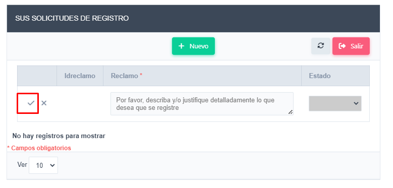

En el ítem de menú Formación > Capacitación, Perfeccionamiento > Financiado por la Facultad, podrá observar las capacitaciones por las que recibió ayuda económica del Fondo de Capacitación Docente o por parte de la Escuela correspondiente.
En la columna Acciones: Con el icono Solicitar cambios o eliminar el registro correspondiente. y con el icono podrá visualizar la resolución correspondiente.
En caso de notar que falta algún registro, haciendo uso del Botón Solicitudes de Registro, podrá enviar a los administradores datos relevantes para agregar un nuevo registro financiado por la Facultad.
Para finalizar la carga debe hacer clic en el icono de tilde, su solicitud quedará pendiente, y será procesada por personal administrativo.